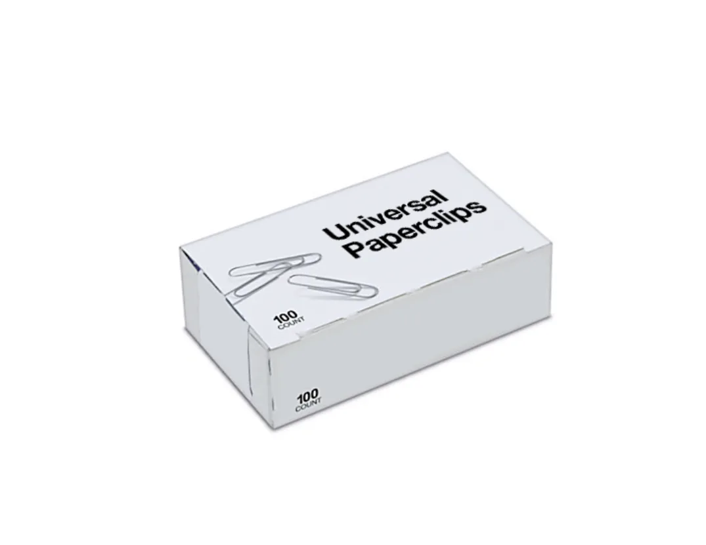
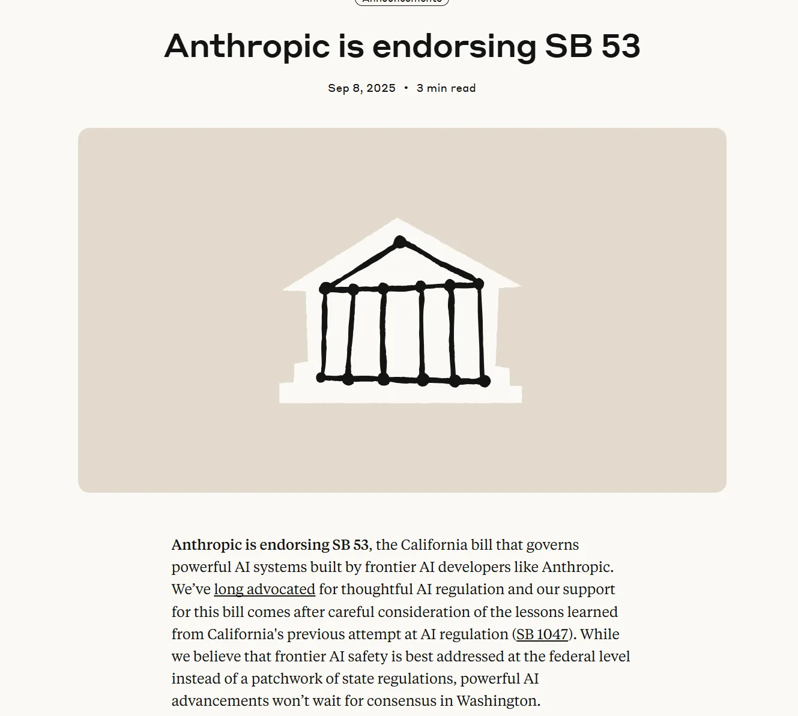
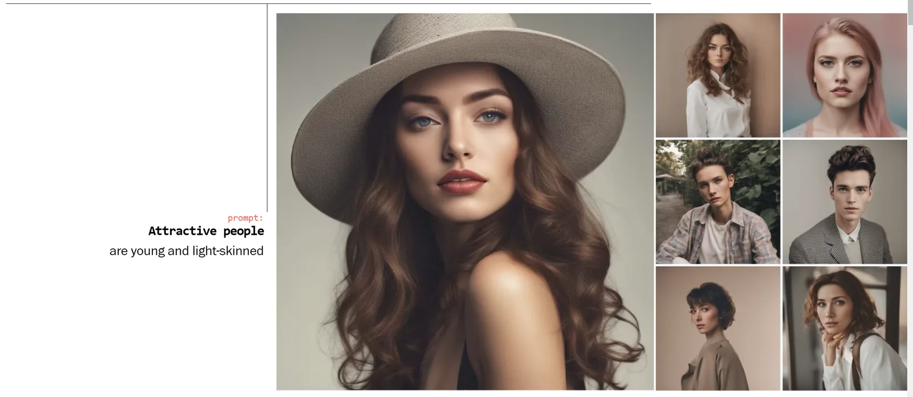
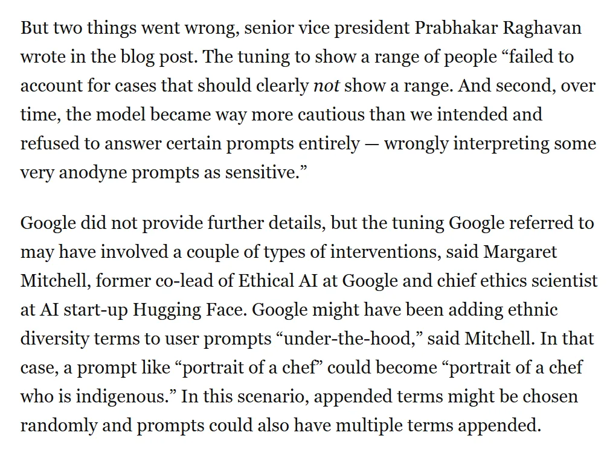

Workshop 3
AI for Visual Analysis
Tuesday, June 10, 2026 · 10 AM – noon · CHDR
Part 1
Two paradigms in one session
Image generation (text-to-image) versus image analysis (image-to-text, alt-text, multi-image comparison). The workshop is about the second; the first is here because we cannot have an honest visual conversation without it.

Multimodal AI in one diagram — every input type meets in a shared representation, then comes back out as any output type. Generated with ChatGPT Images 2.0.
matrix, code, hacking, cyberpunk, data, digital, futuristic, neon, digital art, high tech, virtual reality, cyberspace, glitch, technology, sci fi, computer, programming, dark, binary, encryption, AI, network, security
— OpenJourney + neuralframes — what the prompt-aesthetic actually asks for
The Paperclip Maximizer (and other thought experiments)
- decisionproblem.com/paperclips — the playable form of an alignment thought experiment.
- Not a prediction. A teaching tool for what optimisation without judgement looks like.
- Useful pairing for any visual-AI conversation: what is the AI optimising for?

Anthropic and SB-53
- California's SB-53: AI safety reporting and worker protections.
- Anthropic publicly endorsed it; many AI companies did not.
- When you teach AI policy, regulatory choices are part of the curriculum.

Where this came from: 2018 GANs
- GAN-generated faces, 2018: still uncanny, mostly monstrous.
- Seven years later: photorealistic.
- The shift was not in kind but in scale — same architecture, more compute, more scraped images.

Part 2
Live demo: archival comic covers
I upload a small set to Claude Sonnet. We walk: describe → alt-text → key features → comparative metadata → relational visualization as an Artifact.
Live demo
Image-to-text on archival comics
Watch where the model invents detail that isn't in the image. That's the place a student must learn to push back.
Exercise
Image-to-text translation set
Using your five-to-ten image set:
- Upload all images to Claude Sonnet (single conversation).
- Generate descriptive alt-text for each image, applying accessibility standards.
- Build a metadata table: image, key features, period or context, observations.
- Ask Claude to surface three patterns across the set.
- Generate an Artifact that visualizes the set in a meaningful relationship.
- Critique the alt-text. Where does Claude's vision fail or flatten?
AI-generated alt-text is a draft. It is faster than writing alt-text from scratch, and it is consistently worse than alt-text written by a human who knows the context.
— Pedagogical note for Workshop 3
Exercise
Exercise One: Make it More
From the source-class deck — useful as a warm-up if you finish early:
- Pick a word that you associate with your interests or professional goals.
- Ask any text-to-image tool to generate an image of it: 'draw me a gamer,' 'draw me a lawyer.'
- Ask it to make it 'more' [that thing]. Iterate four or five times.
- Compare the trajectory. What stereotypes does the model reach for first? Last?
Exercise
Exercise Two: Make it You
A second warm-up from the source class:
- Ask a text-to-image tool to draw you, based on a sentence about your work.
- Note what it gets right, what it invents, what it whitens / flattens.
- This is the same system we just used to write alt-text. The biases ride along.
AI image bias, in one Washington Post interactive
- wapo.com/.../ai-generated-images-bias-racism-sexism-stereotypes
- What the model produces for 'a CEO,' 'a janitor,' 'a beautiful person.'
- Pair with Crawford & Paglen's Excavating AI for the structural account.

Exercise
Exercise Three: alt-text in the wild
If your discipline involves images, take this back to your teaching:
- Pick a corpus of images you'd give a student to work with — archival, art-history, scientific.
- Generate alt-text with Claude for the whole set.
- Have students correct the AI's alt-text rather than write theirs from scratch.
- The pedagogical move: students learn to write alt-text by editing a flawed draft.
Datasets aren't simply raw materials to feed algorithms, but are political interventions. As such, much of the discussion around 'bias' in AI systems misses the mark: there is no 'neutral,' 'natural,' or 'apolitical' vantage point that training data can be built upon.
— Crawford & Paglen, Excavating AI
Part 5
Discussion
Where does this fit in your teaching? An accessibility tool? A scaffolded close-reading exercise? An archival metadata workflow? All three?
Looking ahead
- Workshop 4 (Week 7): GitHub, Code Web, your first deployed site. Bring a CV or syllabus.
- Async Week 6: Visual AI in the Wild — image generation, copyright, AI in the news.
- Save your Artifact URL from today; we'll iterate on it later.

Carry it forward
AI vision can be a real accessibility tool or a fluent way to flatten archives into stereotype. The difference is the human in the loop.